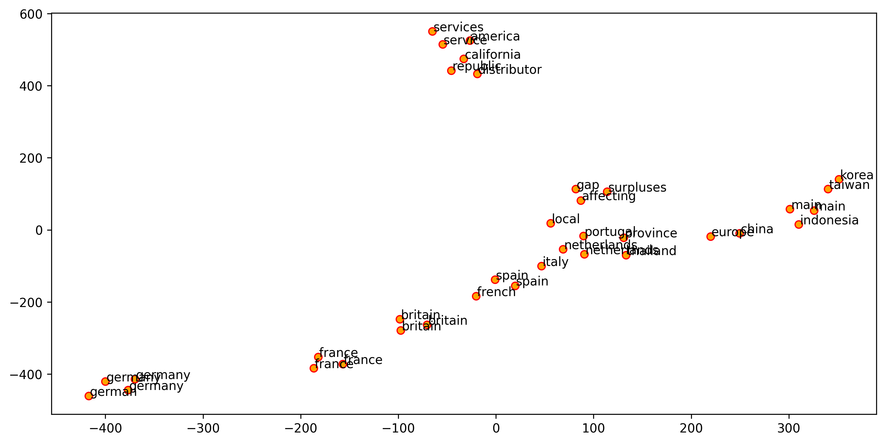

Assignment XI: Word Embeddings¶
Question 1¶
Train word embeddings using the word2vec methods on the nltk.corpus.reuters.
Please present your embeddings by visualizing the embeddings of the following words, as well as their nearest FIVE members:
['china', 'taiwan', 'britain','germany', 'france','america']
A few notes for preprocessing and model training:
Please remove words that do not consist of alphabets and hyphens
Please include words whose lengths are at least two characters long
Please normalize all words into lower-casing letters in the embeddings training.
Please set
max_vocab_size = 10000for theWord2Vec()
plt.figure(figsize=(12, 6))
plt.scatter(T[:, 0], T[:, 1], c='orange', edgecolors='r')
for label, x, y in zip(labels, T[:, 0], T[:, 1]):
plt.annotate(label,
xy=(x + 1, y + 1),
xytext=(0, 0),
textcoords='offset points')
